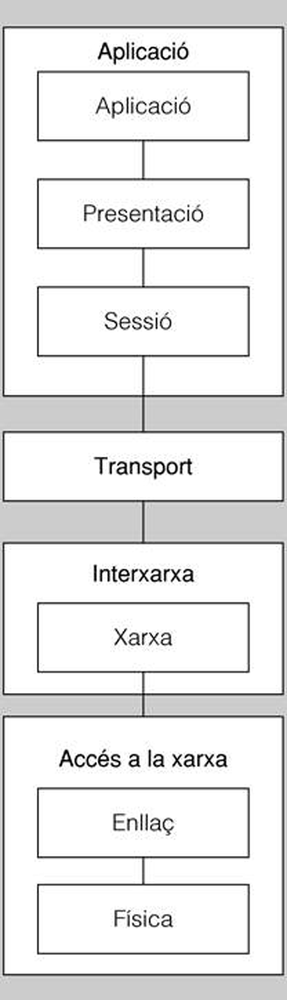

La precursora de muchas de las redes que se usan hoy en día es la red ARPANET, que es una red de carácter militar creada por el Departamento de Defensa de los Estados Unidos a finales de los años sesenta del siglo pasado, y que terminó conectando muchas universidades y instalaciones gubernamentales utilizando líneas telefónicas convencionales. Más adelante, cuando se añadieron enlaces por satélite o radio, los sistemas comenzaron a tener problemas para interactuar con estas nuevas redes. Se hizo patente que era necesaria una nueva arquitectura de referencia para poder conectar diferentes modelos de redes. Esta arquitectura se popularizó como el modelo de referencia TCP / IP (iniciales de sus dos principales protocolos), que es el modelo de Internet.
La red Internet comenzó el 1 de enero de 1983, con la primera red de largo alcance WAN basada en tecnología TCP / IP, puesta en marcha por la NSF (National Science Foundation) de Estados Unidos. Internet se abrió públicamente a los intereses comerciales en 1995.
- 
- Capas TCPIP
| El modelo OSI | Modelo TCP / IP | |
|---|---|---|
| 7 | aplicación | aplicación |
| 6 | presentación | aplicación |
| 5 | sesión | aplicación |
| 4 | Transporte | Transporte |
| 3 | red | Internet |
| 2 | enlace | Acceso a la red |
| 1 | Física | Acceso a la red |
De manera similar al modelo OSI, el modelo TCP / IP está dividido en capas, como se ve en la figura.
Hay que observar, sin embargo, que algunas capas tienen el mismo nombre que las capas OSI; en cambio, aunque la mayoría tienen las mismas funciones en un modelo y el otro, en otras no es así.
Capa 4: aplicación
La capa de aplicación TCP / IP se corresponde con las capas de aplicación, presentación y sesión del modelo OSI.
La capa de aplicación es la capa que los programas utilizan para comunicarse a través de la red con otros programas.
Algunos programas que proporcionan servicios que trabajan directamente con las aplicaciones de usuario y sus correspondientes protocolos de la capa de aplicación son, por ejemplo, HTTP (Hyper Text Transfer Protocol), FTP (file transfer protocol), SMTP (simple mail transfer protocol ), SSH (secure shell), entre otros.
Capa 3: transporte
La capa de transporte TCP / IP se corresponde con la capa de transporte del modelo OSI.
Los protocolos de la capa de transporte solucionan problemas como la fiabilidad y la seguridad de que los datos llegan al destino y lo hacen en el orden correcto. Hay dos protocolos básicos en la capa de transporte:
TCP
El protocolo para el control de la transmisión o transmisión control protocolo (TCP) es un protocolo orientado a la conexión que permite la entrega de datagramas de manera fiable. Antes de poder transmitir ningún dato, es necesario establecer una conexión entre los dos terminales que se quieren comunicar.
-
TCP. Es un protocolo fiable orientado a la conexión, que hace que un flujo de bytes de la aplicación de la máquina origen sea entregado sin errores en la aplicación de cualquier máquina destino de red. Este protocolo fragmenta el flujo procedente de la capa de aplicación en mensajes más pequeños y después de encapsularse los los transmite a la capa de Internet. En la máquina destino, el proceso que los recibe los reensambla para obtener el flujo original que envía hacia la capa de aplicación.
-
UDP. Es un protocolo no fiable, sin conexión, para aplicaciones que no necesitan ni la asignación de una secuencia ni el control de flujo de TCP, o que quieren utilizar sus medios de control propios. Este protocolo es muy utilizado en consultas de petición y respuesta de una sola vez y en aplicaciones en las que la rapidez de la entrega es más importante que la exactitud de los datos, como por ejemplo en la transmisiones de voz o de vídeo.
UDP
El protocolo de datagramas de usuario o User Datagram Protocol (UDP) es un protocolo que permite el envío de datagramas a través de una red sin que se haya establecido previamente una conexión, ya que el datagrama mismo incorpora suficiente información de direccionamiento a su cabecera.
Capa 2: Internet
La capa de Internet del modelo TCP / IP es equivalente a la capa de red del modelo OSI.
Observe que el concepto Internet es definido como entre redes, y no como la red global Internet
La misión fundamental de esta capa es hacer que los nodos implicados en la comunicación envíen los paquetes por cualquier red y los hagan viajar independientemente hacia su destino. Los paquetes incluso podrían llegar a su destino cada uno por un camino diferente, e incluso en diferente orden de cómo salieron del emisor. En cualquier caso, su reorganización corresponde a la capa de transporte.
La capa de Internet define el protocolo IP (Internet Protocol, 'protocolo de Internet'). El trabajo encargada a la capa de Internet es hacer que los paquetes lleguen a su destino. La consideración más importante de esta capa es, pues, el encaminamiento de los paquetes.
Capa 1: acceso a la red
La capa de acceso a la red del modelo TCP / IP es equivalente a las capas de enlace y física del modelo OSI.
En el modelo TCP / IP sólo indica que el nodo debe conectarse a la red haciendo uso de los protocolos que hay en la red física en cuestión, de manera que se puedan enviar paquetes IP. Estos protocolos varían según sean las tecnologías de transmisión y los medios de red que utilicen.
Capa física
El propósito de la capa física es transportar una corriente de bits en bruto de una máquina a otra.
La capa física es la capa más baja de la jerarquía de comunicaciones. En la capa física hay definidos las señales y los medios utilizados para transmitir estas señales.
Hay diferentes tipos de medios físicos para hacer este transporte, cada uno en su ambiente propio en términos de ancho de banda, retraso, coste, facilidad de instalación o mantenimiento.
En cada capa actúa una serie de protocolo, como por ejemplo los que son representados en la figura.